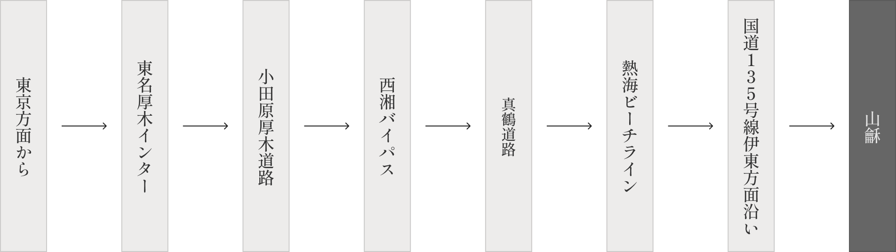
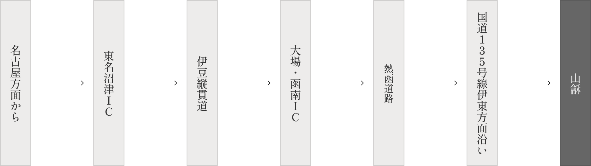
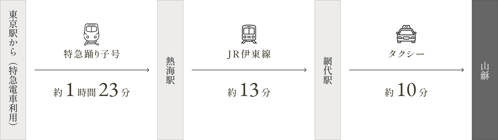
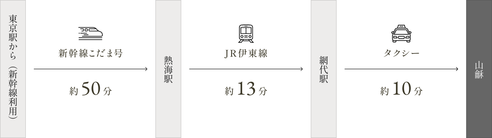
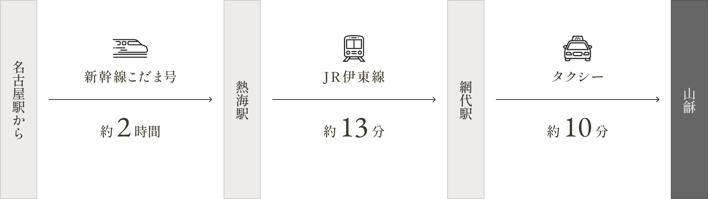
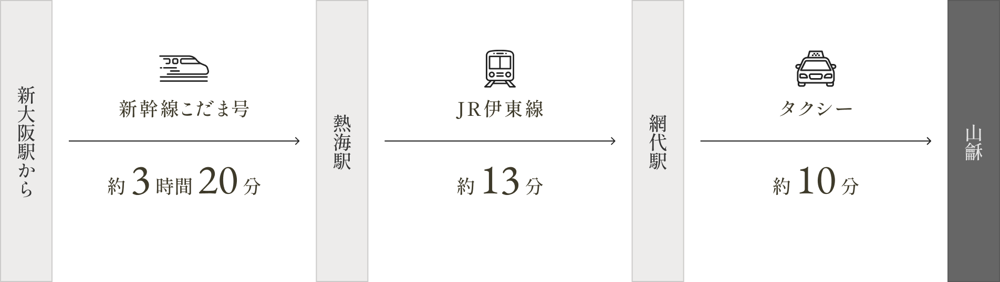
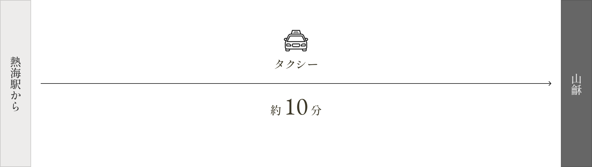

- チェックイン ／ チェックアウト
- チェックイン 15:30
チェックアウト 11:00
- 駐車場
-
駐車場御利用の御客様はご予約時に車種、色を必ず御明記下さいませ。
※駐車場に関しまして（2020年8月15日より改定）
【貴賓館（貴賓室【山】、特別室【蒼】【海】）御利用の御客様】
正面玄関前駐車場は4台のみとなります。御客様ご自身で駐車場に御停め下さいませ。お車の移動等は事故防止の為致しておりません事、どうぞ御理解くださいますようお願い申し上げます。
【本館（【月】【峰】【汀】【華】）御利用の御客様】
少し離れた場所にあります第二駐車場の御利用となります。一度正面玄関前に御停車頂き、運転者様以外の方は御下車頂きました後、第二駐車場の場所を御案内致します。事故防止の為バレーサービスは致しておりません。お客様ご自身で第二駐車場迄御停車下さいませ。どうぞ御理解くださいますようお願い申し上げます。
- 備考
-
【電気自動車御利用のお客様】
当館はテスラ社他各自動車メーカーに対応した充電設備がございます。電気自動車充電設備ご利用の際はご予約時その旨お申し付け下さいませ。
※裏側駐車場利用となり1台のみとなります。
※テスラ社以外の御客様は必ずお車に付属しております充電用ケーブルを御持参下さいませ。（当館充電ケーブルの御用意は御座いません）
【カーナビの設定について】
住所から検索で 静岡県熱海市網代591-102 で検索して頂き御設定下さいませ。
※カーナビの機種によっては旧施設名が出てくる場合がございますが、そちらで問題ございません。
( By Car )
お車でお越しの場合
東京方面から
（ 約2時間〜2時間30分 ）

名古屋方面から
（ 約2時間30分〜3時間 ）

( By Train )
電車でお越しの場合
東京駅から特急電車をご利用の場合
（ 約1時間43分 ）

東京駅から新幹線利用をご利用の場合
（ 約1時間13分 ）

名古屋駅から
（ 約2時間23分 ）

新大阪駅から
（ 約3時間43分 ）

熱海駅から
（ 約10分 ）
